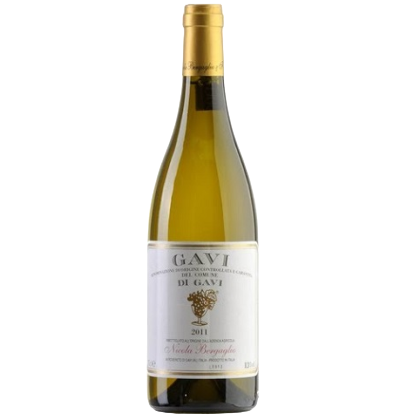

Prodotto da La Scolca, storica cantina del Piemonte,
il Gavi di Gavi “Black Label” è un vino bianco
elegante, realizzato con uve Cortese selezionate da
vecchie vigne.
Si distingue per aromi nitidi di agrumi, fiori bianchi,
mandorla e leggere sfumature minerali.
Al gusto è secco, fresco e armonico, con una bella
persistenza e un finale pulito.
È il bianco simbolo del Piemonte, perfetto con piatti
a base di pesce, crostacei o verdure. La sua eleganza
deriva da una vinificazione precisa e da una lunga
esperienza che esalta la tipicità del vitigno Cortese.
